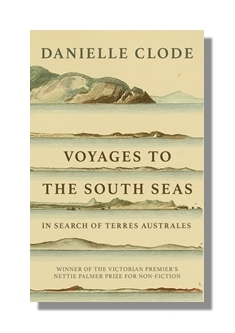

Voyages to the South Seas
Winner - Victorian Premier's Award for Nonfiction
Award-winning documentary 'French voyages of discovery to Australia'
Voyages to the South Seas brings to life the courageous and often tragic voyages of Australia’s French explorers – Bougainville, Lapérouse, D’Entrecasteaux, Baudin, Freycinet, Dumont d’Urville and others.
Could Australia ever have been French? The English certainly thought so. Through revolution, empire and restoration, late 18th and early 19th century France maintained an unwavering commitment to research and discovery in the Pacific region and in Australia.
More interested in science than in new colonies, these early French voyages, led by commanders like Bougainville, Lapérouse, D’Entrecasteaux, Baudin, Freycinet, Duperrey and Dumont d’Urville, were the first to name, describe and beautifully illustrate many Australian species. They took specimens back to French museums where they provided an important foundation for Australian biology and conservation, particularly in botany and marine biology. England may have colonised Australia, but for many years it was France that understood it best.
This is the story of noble men impoverished by their passion, and unknowns who made their names through physical courage and intellectual achievement. It is the story of the young men who risked their lives for adventure and excitement but, above all, in the pursuit of scientific knowledge.
Published by Ligature Press
Available in paperback and ebook
Available in French and English from all good bookstores
Find your local bookstore Buy now in Aus/NZ
Praise for the book
‘exquisitely written, its erudition lightly worn, its narrative lines compelling and its tone refreshingly warm and direct’ —Prof Jean Fornasiero, Australian Society for French Studies
‘finely researched . . . vibrant’ — Weekend Australian
‘an engaging and often exciting book’—Canberra Times
‘a colourful and dextrously realised historical tapestry.’ —Prof John Gascoigne, University of New South Wales
‘Packed with French romance and swashbuckling explorers’ — Diamond Valley Leader
‘a powerful and compelling narrative’ — Historical Records of Australian Science
‘Clode has the eye of a storyteller and shows great writing skill bringing the episodes to life’ —Herald Sun
« Une très belle proposition reliant une histoire d’aventure avec l’histoire des sciences et des hommes de sciences et d’exploration » —VanessaV, Babelio
« C’est là une approche originale et plaisante de l’histoire des sciences, et indiscutablement une belle réussite. » —Prof Eric Buffetaut, Pour la Science
« servi par une écriture agréable, fluide, qui a la générosité de donner autant d'importance aux navigateurs . . . qu'aux naturalistes . . . et même aux mécènes. » —Le Magazine Littéraire
« Clode cherche . . . à approcher cette aventure de l’intérieur, à travers les écrits de l’époque, rédigés par les acteurs de l’épopée, qu’ils aient été scientifiques, mécènes ou navigateurs ; restituant avec talent ce que devaient éprouver les explorateurs de jadis. » —Catherine Clavet, Libération